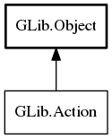

Action
Object Hierarchy:
Description:
Action represents a single named action.
The main interface to an action is that it can be activated with activate . This results in the 'activate' signal being emitted. An activation has a Variant parameter (which may be null). The correct type for the parameter is determined by a static parameter type (which is given at construction time).
An action may optionally have a state, in which case the state may be set with change_state. This call takes a Variant. The correct type for the state is determined by a static state type ( which is given at construction time).
The state may have a hint associated with it, specifying its valid range.
Action is merely the interface to the concept of an action, as described above. Various implementations of actions exist, including SimpleAction.
In all cases, the implementing class is responsible for storing the name of the action, the parameter type, the enabled state, the optional state type and the state and emitting the appropriate signals when these change. The implementor responsible for filtering calls to activate and change_state for type safety and for the state being enabled.
Probably the only useful thing to do with a Action is to put it inside of a SimpleActionGroup.
All known implementing classes:

Namespace: GLib
Package: gio-2.0
Content:
Properties:
Static methods:
Methods:
Inherited Members:
All known members inherited from class GLib.Object